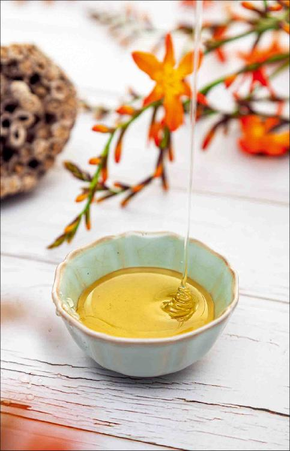

蜂蜜是蜜蜂采集百花蜜酿造的，花的品种不同，蜂蜜的功效就有差别。我们在不同的季节，不同的气候条件下，可以吃不同的蜂蜜；而我们的体质不同，身体状况不同，也适合用不同的蜂蜜来调理。
1.市场上的蜂蜜分为两类
市场上的蜂蜜产品分为两大类：一类是明确标注了品种的，比如荆条花蜜、洋槐花蜜；一类是没有明确标注品种的。
没有标注品种的蜂蜜是不是由各种花蜜所酿造的呢？其实不尽然。它的原料多半是取自油菜花蜜。
油菜在我国的种植面积遍布东南西北，油菜是最为大宗的蜜源植物，油菜花蜜的产量也是最高的，同时它的成本也是最低的。
好的油菜花蜜，它也会标注清楚是油菜花蜜。
油菜花蜜要在春季的时候吃，因为有保肝的作用，您最好是吃当季新鲜的，保肝作用更好。
有一些低档的油菜花蜜，会被加工为普通的蜂蜜产品，这种低档的油菜花蜜也就不标注了。
纯正的油菜花蜜是会结晶的。经过过度加工或者低档的油菜花蜜就无法结晶，也就没有办法标注为油菜花蜜，只能标注为普通蜂蜜。
2.夏天主要产槐花蜜、荆条花蜜、枣花蜜、柑橘花蜜
在夏天上市的不是油菜花蜜，主要有三种蜜：第一种是槐花蜜，也包括洋槐花蜜；第二种是荆条花蜜；第三种是枣花蜜。
除此之外，还有一些特殊品种的蜂蜜也会在夏天上市，比如我特别喜欢的柑橘花蜜。
槐花蜜、荆条花蜜、柑橘花蜜都很适合在夏天来吃，那它们有什么区别呢？
蜂蜜总体来说是偏于凉性的，但凉的程度各有不同。按照从凉到温来排队，最为偏凉的是槐花蜜，其次是荆条花蜜，再次是柑橘花蜜，最后是枣花蜜。
它们的性质有点区别，适合的体质也就不同。
如果您脾胃特别虚寒，一吃生冷食物就会拉肚子，可以在盛夏的时候吃枣花蜜。
如果您的体质偏于内热体质，在盛夏时节可以吃槐花蜜，因为槐花蜜更有助于解暑、清热。内热重的人一年四季吃也没问题。
槐花蜜是清热、凉血的。夏天天热，血也热，心火很旺，喝槐花蜜有利于清血热、消暑、去心火。
槐花蜜能帮助我们的肝脏去火、解毒，还能泻掉大肠经的湿热。所以眼睛经常发干、发红，容易长青春痘，患痔疮或者由痔疮引起便血，以及一到夏季，腿上或者后背容易长一些疮疡的朋友，还有血压高的人，喝蜂蜜都适合选择槐花蜜。

荆条花蜜相对于槐花蜜来说，它的价格要高一些，那它有什么特点呢？
荆条是一种野生的灌木，历史上廉颇向蔺相如负荆请罪，用的这个荆就是荆条。
荆条长在山里，每年夏天的时候开紫色的小花，香味非常浓郁。
荆条花蜜的药味非常重，有杀菌的功效，能够祛风、散血，对于预防风寒感冒是很有帮助的，对心脏也有保护的作用；同时也很适合给小孩子来吃。
柑橘花蜜适合什么样的人来吃呢？
其实，柑橘花蜜是非常适合女性来吃的，因为柑橘花跟橘皮和橘叶的作用有一点类似，可以理气、解郁、疏肝，能打开我们人体气的通道，其芳香味也让人很舒服。
女性常有一些由肝气郁结引起的妇科病，吃蜂蜜可以选择柑橘花蜜。
对于经常咳嗽、有痰的朋友来说，柑橘花蜜也是一个相对不错的选择。
枣花蜜比较适合老年人、产妇和身体特别虚弱的人，它是养脾胃的。
槐花蜜比较适合想给身体排毒的人，特别是湿热体质，有肝火、心火旺，或者血压高的人。
荆条花蜜有散风的作用，可以帮助肺祛除风热，适合经常伤风感冒、咳嗽的人。
柑橘花蜜有疏肝、理气的作用，适合肝气郁结和咳嗽、有痰的人。
这几种蜂蜜，虽然功效有一点差别，但它们并不互相排斥，如果您是普通人，或者您觉得自己每种情况都有一点，想综合调理，那您不妨把这几种蜂蜜交叉着来吃，也是不错的。
允斌解惑：油菜花蜜价廉适合常规用，荆条花蜜价贵适合专用
禾惠：荆条花蜜和油菜花蜜哪个更好？
允斌：油菜花蜜价廉适合常规用，荆条花蜜价贵适合专用。